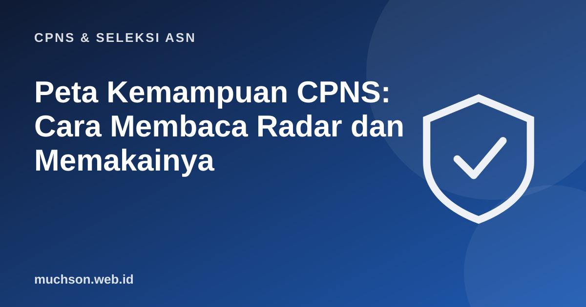

Beranda › Artikel › CPNS & Seleksi ASN
CPNS & Seleksi ASNPeta Kemampuan CPNS: Cara Membaca Radar dan Memakainya
Belajar tanpa tahu kelemahan seperti mengisi bak yang bocor. Peta kemampuan menyatukan hasil latihan dan simulasi ke dalam satu diagram radar, membandingkannya dengan target aman, lalu menunjuk tiga bab yang perlu diprioritaskan. Berikut cara membaca dan memanfaatkannya.

Apa itu peta kemampuan
Peta kemampuan adalah diagram radar yang menampilkan persentase penguasaan Anda per bab atau kelompok bab, dibandingkan dengan target. Datanya berasal dari hasil latihan per bab dan simulasi yang Anda kerjakan. Tanpa data (bab belum dicoba), sistem menandai bab dengan label "belum" supaya Anda tahu bagian itu masih kosong, bukan dianggap kuat.
Deskripsi teks diagram
- Prioritas belajar: tiga bab dengan selisih terbesar dari target
- Bandingkan dengan target: target aman tiap kelompok materi
- Persentase penguasaan per bab: dari hasil latihan dan simulasi
- Hasil latihan dan tryout: tercatat otomatis
Target aman: kenapa lebih tinggi dari ambang batas
Peta kemampuan memakai target per kelompok materi: TWK 60%, TIU 65%, TKP 80%, manajerial 80%, dan BUMN 75%. Target ini lebih tinggi daripada ambang batas resmi agar ada margin keamanan. Ambang batas resmi CPNS umum (rujukan terakhir KepmenPANRB 321/2024) adalah TWK 65 dari 150 (sekitar 43%), TIU 80 dari 175 (sekitar 46%), dan TKP 166 dari 225 (sekitar 74%).
| Subtes | Ambang batas resmi (rujukan CPNS umum) | Persen dari maksimal | Target peta kemampuan |
|---|---|---|---|
| TWK | 65 dari 150 | sekitar 43% | 60% |
| TIU | 80 dari 175 | sekitar 46% | 65% |
| TKP | 166 dari 225 | sekitar 74% | 80% |
Persentase pada peta kemampuan adalah penguasaan per bab pada soal latihan, bukan persen poin SKD resmi. Gunakan sebagai penunjuk prioritas, bukan prediksi kelulusan.
Deskripsi teks diagram
- TWK: ambang batas: 43%
- TWK: target peta: 60%
- TIU: ambang batas: 46%
- TIU: target peta: 65%
- TKP: ambang batas: 74%
- TKP: target peta: 80%
Membaca radar dan daftar prioritas
- Sumbu terpendek. Itulah kelemahan terbesar relatif terhadap target.
- Bar merah, kuning, dan normal. Merah berarti jauh di bawah target, kuning di bawah target, normal berarti mencapai target.
- Label "belum". Bab belum pernah dicoba, jadi belum ada data.
- Tiga prioritas. Bab dengan selisih terbesar dari target; kerjakan dulu.
- Kekuatan. Bab yang melampaui target; cukup dijaga lewat latihan harian.
Cara memakainya tiap minggu
Deskripsi teks diagram
- Awal minggu: Buka peta. Catat tiga prioritas dan sumbu terpendek
- Tengah minggu: Latih bab prioritas. Set 20 soal per sesi, bahas kesalahan
- Akhir minggu: Tryout atau campuran. Ukur apakah selisih mengecil
- Pekan berikutnya: Perbarui prioritas. Bab yang naik boleh diturunkan prioritasnya
Mulai dengan tryout SKD gratis agar peta terisi, lalu buka peta kemampuan di LolosSeleksi.
Tanya jawab
Apa isi peta kemampuan?
Dari mana data peta kemampuan?
Apa arti target pada peta?
Apakah peta memprediksi kelulusan?
Bagaimana mengisi bab yang berlabel belum?
Referensi
- Halaman latihan per bab LolosSeleksi (membuka tab baru)
- Halaman tryout CAT LolosSeleksi (membuka tab baru)
- Rangkuman nilai ambang batas SKD CPNS 2024 (KepmenPANRB 321/2024), Okezone (membuka tab baru)
- Keputusan Menteri PANRB Nomor 406 Tahun 2026 tentang Nilai Ambang Batas SKD Sekolah Kedinasan (JDIH KemenPANRB, 27 Juli 2026) (membuka tab baru)